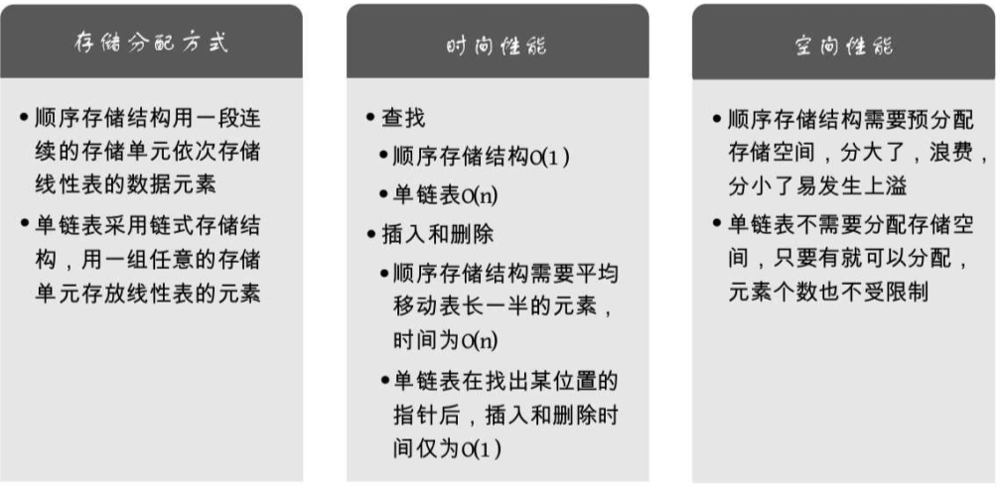

《大话数据结构》学习
《大话数据结构》学习之三：线性表
3. 线性表
线性表：零个或多个数据元素的有限序列。
3.1. 开场白
3.2. 线性表的定义
线性表（List）：零个或多个数据元素的有限序列。
首先它是一个序列。元素之间是有顺序的，若元素存在多个，则第一个元素无前驱，最后一个元素无后继，其他每个元素都有且只有一个前驱和后继。
然后，线性表强调是有限的，元素个数是有限的。
如果用数学语言来进行定义。可如下：
线性表元素的个数 定义为线性表的长度，当 时，称为空表。 为数据元素 在线性表中的位序。
在较复杂的线性表中，一个数据元素可以由若干个数据项组成：
3.3. 线性表的抽象数据类型
对于一个线性表来说，插入数据和删除数据都是必须的操作。
线性表的抽象数据类型定义如下：
ADT 线性表(List)
Data
线性表的数据对象集合为{a1, a2, ......, an}，每个元素的类型均为DataType。 其中，除
第一个元素a1外，每一个元素有且只有一个直接前驱元素，除了最后一个元素an外，每一个元素有且
只有一个直接后继元素。数据元素之间的关系是一对一的关系。
Operation
InitList(*L): 初始化操作，建立一个空的线性表L。
ListEmpty(L): 若线性表为空，返回true，否则返回false。
ClearList(*L): 将线性表清空。
GetElem(L, i, *e): 将线性表L中的第i个位置元素值返回给e。
LocateElem(L, e): 在线性表L中查找与给定值e相等的元素，如果查找成功，返回该元素在表中序号表示成功；
否则，返回0表示失败
ListInsert(*L,i,e): 在线性表L中的第i个位置插入新元素e
ListDelete(*L,i,*e): 删除线性表L中的第i个位置元素，并用e返回其值
ListLength(L): 返回线性表L的元素个数
EndADT
对于不同的应用，线性表的基本操作是不同的，上述操作是最基本的，对于实际问题中涉及的关于线性表的更复杂操作，完全可以用这些基本操作的组合来实现。
3.4. 线性表的顺序存储结构
3.4.1. 顺序存储定义
我们来看看线性表的两种物理结构的第一种——顺序存储结构。
线性表的顺序存储结构，指的是用一段地址连续的存储单元依次存储线性表的数据元素。 示意图如下：
3.4.2. 顺序存储方式
线性表的顺序存储结构，说白了，和刚才的例子一样，就是在内存中找了块地儿，通过占位的形式，把一定内存空间给占了，然后把相同数据类型的数据元素依次存放在这块空地中。既然线性表的每个数据元素的类型都相同，所以可以用 C 语言（其它语言也相同）的一维数据来实现顺序存储结构，即把第一个数据元素存放到数组下标记为 0 的位置中，接着把线性表相邻的元素存储在数组中相邻的位置。
线性表的顺序存储的结构代码:
typedef int ElemType; /* ElemType类型根据实际情况而定，这里假设为int */ typedef struct { ElemType data[MAXSIZE]; /* 数组存储数据元素，最大值为MAXSIZE */ int length; /* 线性表当前长度 */ } SqList;
顺序存储结构需要三个属性：
- 存储空间的起始位置：数组data，它的存储位置就是存储空间的存储位置；
- 线性表的最大存储容量：数组长度MaxSize；
- 线性表的当前长度：length。
3.4.3. 数组长度与线性表长度区别
- 数组的长度是存放线性表的存储空间的长度，存储分配后这个量一般是不变的；
- 线性表的长度是线性表中数据元素的个数，随着线性表插入和删除操作的进行，这个量是变化的；
- 在任意时刻，线性表的长度应该小于等于数组的长度。
3.4.4. 地址计算方法
存储器中的每个存储单元都有自己的编号，这个编号称为地址：
每个数据元素，不管它是整型、实型还是字符型，它都是需要占用一定的存储单元空间的。假设占用的是 个存储单元，那么线性表中第 个数据元素的存储位置和第 个数据元素的存储位置满足下列关系：
LOC 表示获得存储位置的函数。
第 个数据元素 的存储位置可以由 推算得出：
对每个线性表位置的存入或者取出数据，对于计算机来说都是相等的时间，也就是一个常数，存取时间性能为 。通常把具有这一特点的存储结构称为随机存取结构。
3.5. 顺序存储结构的插入与删除
3.5.1. 获得元素操作
实现GetElem操作，即将线性表L中的第i个位置元素值返回：
#define OK 1 #define ERROR 0 #define TRUE 1 #define FALSE 0 typedef int Status; /* Status是函数的类型，其值是函数结果状态代 码，如OK等 */ /* 初始条件：顺序线性表L已存在，1≤i≤ ListLength(L) */ /* 操作结果：用e返回L中第i个数据元素的值 */ Status GetElem(SqList L, int i, ElemType *e) { if (L.length == 0 || i < 1 || i > L.length) return ERROR; *e = L.data[i - 1]; return OK; }
返回值类型Status是一个整型，返回OK代表1，ERROR代表0。
3.5.2. 插入操作
插入算法的思路：
- 如果插入位置不合理，抛出异常；
- 如果线性表长度大于等于数组长度，则抛出异常或动态增加容量；
- 从最后一个元素开始向前遍历到第i个位置，分别将它们都向后移动一个位置；
- 将要插入元素填入位置i处；
- 表长加 1。
实现代码如下：
/* 初始条件：顺序线性表L已存在，1≤i≤ListLength(L)， */ /* 操作结果：在L中第i个位置之前插入新的数据元 素e，L的长度加1 */ Status ListInsert(SqList *L, int i, ElemType e) { int k; if (L->length == MAXSIZE) /* 顺序线性表已经满 */ return ERROR; if (i < 1 || i >L->length + 1) /* 当i不在范围内时 */ return ERROR; if (i <= L->length) /* 若插入数据位置不在表尾 */ { for (k = L->length - 1; k >= i - 1; k--) /*将要插入位置后数据元素向后移动一位 */ L->data[k + 1] = L->data[k]; } L->data[i - 1] = e; /* 将新元素插入 */ L->length++; return OK; }
3.5.3. 删除操作
删除算法的思路：
- 如果删除位置不合理，抛出异常；
- 取出删除元素；
- 从删除元素位置开始遍历到最后一个元素位置，分别将它们都向前移动一个位置；
- 表长减 1。
实现代码如下：
/* 初始条件：顺序线性表L已存在，1≤i≤ ListLength(L) */ /* 操作结果：删除L的第i个数据元素，并用e返回 其值，L的长度减1 */ Status ListDelete(SqList *L, int i, ElemType *e) { int k; if (L->length == 0) /* 线性表为空 */ return ERROR; if (i < 1 || i > L->length) /* 删除位置不正确 */ return ERROR; *e = L->data[i - 1]; if (i < L->length) /* 如果删除不是最后位置 */ { for (k = i; k < L->length; k++) /* 将删除位置后继元素前移 */ L->data[k - 1] = L->data[k]; } L->length--; return OK; }
-
如果元素要插入到最后一个位置，或者删除最后一个元素，时间复杂度为 ；
-
如果元素要插入到第一个位置或者删除第一个元素，意味着要移动所有的元素向后或者向前，时间复杂度为 ；
-
平均的情况，由于元素插入到第 个位置，或删除第 个元素，需要移动 个元素。根据概率原理，每个位置插入或删除元素的可能性是相同的，也就说位置靠前，移动元素多，位置靠后，移动元素少。最终平均移动次数和最中间的那个元素的移动次数相等，为 ，平均时间复杂度还是 。
线性表的顺序存储结构，在存、读数据时，不管是哪个位置，时间复杂度都是 ；而插入或删除时，时间复杂度都是 。
3.5.4. 线性表顺序存储结构的优缺点
3.6. 线性表的链式存储结构
3.6.1. 顺序存储结构不足的解决办法
线性表的顺序存储结构最大的缺点就是插入和删除时需要移动大量元素，显然需要耗费时间。
3.6.2. 线性表链式存储结构定义
线性表的链式存储结构的特点是用一组任意的存储单元存储线性表的数据元素，这组存储单元可以是连续的，也可以是不连续的。这些数据元素可以存在内存未被占用的任意位置。

以前在顺序结构中，每个数据元素只需要存数据元素信息就可以了。现在链式结构中，除了要存数据元素信息外，还要存储它的后继元素的存储地址。
因此，为了表示每个数据元素 与其直接后继数据元素 之间的逻辑关系，对数据元素 来说，除了存储其本身的信息之外，还需存储一个指示其直接后继的信息（即直接后继的存储位置）。我们把存储数据元素信息的域称为数据域，存储直接后继位置的域称为指针域。指针域中存储的信息称做指针或链。这两部分信息组成数据元素的存储映像，称为结点（Node）。
n 个结点（ 的存储映像）链结成一个链表，即为线性表 的链式存储结构，因为此链表的每个结点中只包含一个指针域，所以叫做单链表。单链表正是通过每个结点的指针域将线性表的数据元素按其逻辑次序链接在一起；如下图所示：
链表中第一个结点的存储位置叫做头指针，整个链表的存取必须是从头指针开始进行。之后的每一个结点，其实就是上一个的后继指针指向的位置。
线性链表的最后一个结点指针为“空”（通常用 NULL 或 ^ 符号表示）。如下图所示：
为了更加方便地对链表进行操作，会在单链表的第一个结点前附设一个结点，称为头结点。头结点的数据域可以不存储任何信息，也可以存储如线性表的长度等附加信息，头结点的指针域存储指向第一个结点的指针；如下图所示：
3.6.3. 头指针与头结点的异同
2.6.4. 线性表链式存储结构代码描述
若线性表为空表，则头结点的指针域为“空”：
改用更方便的存储示意图来表示单链表：
带有头结点的单链表：
空链表：
单链表中，在 C 语言中可用结构指针来描述:
/* 线性表的单链表存储结构 */ typedef struct Node { ElemType data; struct Node *next; } Node; typedef struct Node *LinkList; /* 定义LinkList */
结点由存放数据元素的数据域和存放后继结点地址的指针域组成。假设 是指向线性表第 个元素的指针，则该结点 的数据域可以用 来表示， 的值是一个数据元素，结点 的指针域可以用 来表示， 的值是一个指针，指向第 个元素，即指向 的指针。
如果 ，那么 ：
3.7. 单链表的读取
在线性表的顺序结构中，我们要计算任意一个元素的存储位置是很容易的。但在单链表中，由于第 个元素到底在哪没办法一开始就知道，必须得从头开始找。因此，对于单链表实现获取第 个元素的数据操作 GetElem，在算法上相对要麻烦一些。
获得链表第 个数据的算法思路：
- 声明一个指针 指向链表第一个结点，初始化 从 1 开始；
- 当 时，就遍历链表，让 的指针向后移动，不断指向下一结点， 累加 1；
- 若到链表末尾 为空，则说明第 个结点不存在；
- 否则查找成功，返回结点 的数据。
实现代码算法如下：
/* 初始条件：顺序线性表L已存在，1≤i≤ListLength(L) */ /* 操作结果：用e返回L中第i个数据元素的值 */ Status GetElem(LinkList L, int i, ElemType *e) { int j; LinkList p; /* 声明一指针p */ p = L->next; /* 让p指向链表L的第个结点 */ j = 1; /* j为计数器 */ while (p && j < i) /* p不为空且计数器j还没有等于i时，循环继续 */ { p = p->next; /* 让p指向下一个结点 */ ++j; } if (!p || j > i) return ERROR; /* 第i个结点不存在 */ *e = p->data; /* 取第i个结点的数据 */ return OK; }
说白了，就是从头开始找，直到第 个元素为止。由于这个算法的时间复杂度取决于 的位置，当 时，则不需要遍历，第一个就取出数了，而当 时则遍历 次才可以。因此最坏情况的时间复杂度是 。
由于单链表的结构中没有定义表长，所以不能事先知道要循环多少次，因此也就不方便使用 for 来控制循环。其主要核心思想就是“工作指针后移”，这其实也是很多算法的常用技术。
此时可能会疑惑，这么麻烦还不如顺序寻存储结构呢。接下来看一下单链表是如何实现“插入”和“删除”的。
3.8. 单链表的插入与删除
3.8.1. 单链表的插入
让 的后继结点改成 的后继结点，再把结点 变成 的后继结点：
s->next = p->next; p->next = s;
插入结点 后:
对于单链表的表头和表尾的特殊情况，操作是相同的：

单链表第 个数据插入结点的算法思路：
- 声明一指针 指向链表头结点，初始化 从 1 开始；
- 当 时，就遍历链表，让 的指针向后移动，不断指向下一结点， 累加1；
- 若到链表末尾 为空，则说明第 个结点不存在；
- 否则查找成功，在系统中生成一个空结点 ；
- 将数据元素 赋值给 ；
- 单链表的插入标准语句 ；
- 返回成功。
实现代码算法如下：
/* 初始条件：顺序线性表L已存在，1≤i≤ListLength(L)， */ /* 操作结果：在L中第i个结点位置之前插入新的数据元素e，L的长度加1 */ Status ListInsert(LinkList *L, int i, ElemType e) { int j; LinkList p, s; p = *L; j = 1; while (p && j < i) /* 寻找第i-1个结点 */ { p = p->next; ++j; } if (!p || j > i) /* 第i个结点不存在 */ return ERROR; s = (LinkList)malloc(sizeof(Node)); /* 生成新结点（C标准函数） */ s->data = e; s->next = p->next; /* 将p的后继结点赋值给s的后继 */ p->next = s; /* 将s赋值给p的后继 */ return OK; }
C 语言的 mal-loc 标准函数，作用是生成一个新的结点，类型与 Node 一样，实质就是在内存中找了一小块空地，准备用来存放数据 e 的 s 结点。
3.8.2. 单链表的删除
单链表第 个数据删除结点的算法思路：
- 声明一指针 指向链表头结点，初始化 从 1 开始；
- 当 时，就遍历链表，让 的指针向后移动，不断指向下一个结点， 累加 1；
- 若到链表末尾 为空，则说明第 个结点不存在；
- 否则查找成功，将欲删除的结点 赋值给 ；
- 单链表的删除标准语句 ；
- 将 结点中的数据赋值给 ，作为返回；
- 释放 结点；
- 返回成功。
实现代码算法如下：
/* 初始条件：顺序线性表L已存在，1≤i≤ListLength(L) */ /* 操作结果：删除L的第i个结点，并用e返回其值，L的长度减1 */ Status ListDelete(LinkList *L, int i, ElemType *e) { int j; LinkList p, q; p = *L; j = 1; /* 遍历寻找第i-1个结点 */ while (p->next && j < i) { p = p->next; ++j; } /* 第i个结点不存在 */ if (!(p->next) || j > i) return ERROR; q = p->next; /* 将q的后继赋值给p的后继 */ p->next = q->next; /* 将q结点中的数据给e */ *e = q->data; /* 让系统回收此结点，释放内存 */ free(q); return OK; }
C 语言的标准函数 free。它的作用就是让系统回收一个 Node 结点，释放内存。
单链表插入和删除算法，都是由两部分组成：
- 第一部分就是遍历查找第 个结点；
- 第二部分就是插入和删除结点。
从整个算法来说，我们很容易推导出：它们的时间复杂度是 。如果在我们不知道第 个元素的指针位置，单链表数据结构在插入和删除操作上，与线性表的顺序存储结构是没有太大优势的。但如果，我们希望从第 个位置，插入 10 个元素，对于顺序存储结构意味着，每一次插入都要移动 个元素，每次都是 。而单链表，我们只需要在第一次时，找到第 个位置的指针，此时为 ，接下来只是简单地通过赋值移动指针而已，时间复杂度都是 。显然，对于插入或删除数据项越频繁的操作，单链表的效率优势就越是明显。
3.9. 单链表的整表创建
顺序存储结构的创建，其实就是一个数组的初始化，即声明一个类型和大小的数组并赋值的过程。而单链表不像顺序存储结构这么集中，可以很散，是一种动态结构。对于每个链表来说，所占用空间的大小和位置是不需要预先分配划定的，可以根据系统的情况和实际的需求即时生成。
所以创建单链表的过程是一个动态生成链表的过程。即从“空表”的初始状态起，依次建立各元素结点，并逐个插入链表。
单链表整表创建的算法思路：
-
声明一指针 和计数器变量 ；
-
初始化一空链表 ；
-
让 的头结点的指针指向 NULL，即建立一个带头结点的单链表；
-
循环：
- 生成一新结点赋值给 ；
- 随机生成一数字赋值给 的数据域 ；
- 将 插入到头结点与前一新结点之间。
实现代码算法如下：
/* 随机产生n个元素的值，建立带表头结点的单链线性表L（头插法） */ void CreateListHead(LinkList *L, int n) { LinkList p; int i; /* 初始化随机数种子 */ srand(time(0)); *L = (LinkList)malloc(sizeof(Node)); /* 先建立一个带头结点的单链表 */ (*L)->next = NULL; for (i = 0; i < n; i++) { /* 生成新结点 */ p = (LinkList)malloc(sizeof(Node)); /* 随机生成100以内的数字 */ p->data = rand() % 100 + 1; p->next = (*L)->next; /* 插入到表头 */ (*L)->next = p; } }
这段算法代码里，我们其实用的是插队的方法，就是始终让新结点在第一的位置。这种算法简称为头插法，如下图所示：
我们也可以每次把新结点都插在终端结点的后面，这种算法称之为尾插法。
实现代码算法如下：
/* 随机产生n个元素的值，建立带表头结点的单链线性表L（尾插法） */ void CreateListTail(LinkList *L, int n) { LinkList p,r; int i; /* 初始化随机数种子 */ srand(time(0)); /* 为整个线性表 */ *L = (LinkList)malloc(sizeof(Node)); /* r为指向尾部的结点 */ r = *L; for (i = 0; i < n; i++) { /* 生成新结点 */ p = (Node *)malloc(sizeof(Node)); /* 随机生成100以内的数字 */ p->data = rand() % 100 + 1; /* 将表尾终端结点的指针指向新结点 */ r->next = p; /* 将当前的新结点定义为表尾终端结点 */ r = p; } /* 表示当前链表结束 */ r->next = NULL; }
指整个单链表， 是指向尾结点的变量， 会随着循环不断地变化结点， 则是随着循环增长为一个多结点的链表。
的意思是将刚才的表尾终端结点 的指针指向新结点 ：
：
的意思就是本来 是在 元素的结点，可现在它已经不是最后的结点了，现在最后的结点是 ，应该将 结点这个最后的结点赋值给 。此时 又是最终的尾结点了。
循环结束后，那么应该尾节点的指针域置空，因此有了 ，以便以后遍历时可以确认其是尾部。
3.10. 单链表的整表删除
当我们不打算使用这个单链表时，我们需要把它销毁，其实也就是在内存中将它释放掉，以便于留出空间给其他程序或软件使用。
单链表整表删除的算法思路如下：
-
声明一指针 和 ；
-
将第一个结点赋值给 ；
-
循环：
- 将下一结点赋值给 ；
- 释放 ；
- 将 赋值给 。
实现代码算法如下：
/* 初始条件：顺序线性表L已存在，操作结果：将L重置为空表 */ Status ClearList(LinkList *L) { LinkList p, q; /* p指向第一个结点 */ p = (*L)->next; /* 没到表尾 */ while (p) { q = p->next; free(p); p=q; } /* 头结点指针域为空 */ (*L)->next = NULL; return OK; }
指向一个结点，它除了有数据域，还有指针域。在做 时，其实是在对整个结点进行删除和内存释放的工作。
更多内容详见书籍。
3.11. 单链表结构与顺序存储结构优缺点

- 若线性表需要频繁查找，很少进行插入和删除操作时，宜采用顺序存储结构。若需要频繁插入和删除时，宜采用单链表结构。
- 当线性表中的元素个数变化较大或者根本不知道有多大时，最好用单链表结构，这样可以不需要考虑存储空间的大小问题。而如果事先知道线性表的大致长度，用顺序存储结构效率会高很多。
3.12. 静态链表
让数组的元素都是由两个数据域组成，data 和 cur。数组的每个下标都对应一个 data 和一个 cur。数据域 data，用来存放数据元素，就是通常要处理的数据；而 cur 相当于单链表中的 next 指针，存放该元素的后继在数组中的下标，把 cur 叫做游标。
用数组描述的链表叫做静态链表(游标实现法)。为了方便插入数据，通常会把数组建立得大一些，以便有一些空闲空间可以便于插入时不至于溢出。
/* 线性表的静态链表存储结构 */ /* 假设链表的最大长度是1000 */ #define MAXSIZE 1000 typedef struct { ElemType data; /* 游标（Cursor），为0时表示无指向 */ int cur; } Component,StaticLinkList[MAXSIZE]; /* 对于不提供结构struct的程序设计语言，可以使用一对并行数组data和cur来处理。 */
对数组第一个和最后一个元素作为特殊元素处理，不存数据。通常把未被使用的数组元素称为备用链表。而数组第一个元素，即下标为 0 的元素的 cur 就存放备用链表的第一个结点的下标；而数组的最后一个元素的 cur 则存放第一个有数值的元素的下标，相当于单链表中的头结点作用，当整个链表为空时，则为 0。
下图示相当于初始化的数组状态：
对应的代码如下：
/* 将一维数组space中各分量链成一备用链表， */ /* space[0].cur为头指针，"0"表示空指针 */ Status InitList(StaticLinkList space) { int i; for (i = 0; i < MAXSIZE - 1; i++) space[i].cur = i + 1; /* 目前静态链表为空，最后一个元素的cur为0 */ space[MAXSIZE - 1].cur = 0; return OK; }
假设已经将数据存入静态链表，比如分别存放着“甲”、“乙”、“丁”、“戊”、“己”、“庚”等数据：
“甲”这里就存有下一元素“乙”的游标 2，“乙”则存有下一元素“丁”的下标 3。而“庚”是最后一个有值元素，所以它的 cur 设置为 0。而最后一个元素的 cur 则因“甲”是第一有值元素而存有它的下标为 1。而第一个元素则因空闲空间的第一个元素下标为 7，所以它的 cur 存有 7。
3.12.1. 静态链表的插入操作
更多内容详见书籍。
3.12.2. 静态链表的删除操作
更多内容详见书籍。
3.12.3. 静态链表优缺点
总的来说，静态链表其实是为了给没有指针的高级语言设计的一种实现单链表能力的方法。尽管不一定会用得上，但这样的思考方式是非常巧妙的，应该理解其思想。
3.13. 循环链表
将单链表中终端结点的指针端由空指针改为指向头结点，就使整个单链表形成一个环，这种头尾相接的单链表称为单循环链表，简称循环链表（circular linked list）。
循环链表带有头结点的空链表：
对于非空的循环链表如下图所示：
其实循环链表和单链表的主要差异就在于循环的判断条件上，原来是判断 是否为空，现在则是 不等于头结点，则循环未结束。
单链表有了头结点时，可以用 的时间访问第一个结点，访问到最后一个结点却需要时间 ，因为需要将单链表全部扫描一遍。
改造一下这个循环链表，不用头指针，而是用指向终端结点的尾指针来表示循环链表，如下图所示，此时查找开始结点和终端结点都很方便了。
终端结点用尾指针 rear 指示，查找终端结点是 ，开始结点是 ，时间复杂也为 。
举个例子，将两个循环链表合并成一个表,尾指针分别是 rearA 和 rearB：
要像把它们合并，只需要如下的操作即可：
P=rearA->next;//保存A表的头节点，即1 rearA->next=rearB->next->next;//将本是指向B表的第一个节点（不是头节点）赋值给rearA->next,即2 rearB->next=p;//将原A表的头节点赋值给rearB->next,即3 free(p);//释放p
3.14. 双向链表
双向链表（double linkedlist）是在单链表的每个结点中，再设置一个指向其前驱结点的指针域。 双向链表中的结点都有两个指针域，一个指向直接后继，另一个指向直接前驱。
/* 线性表的双向链表存储结构 */ typedef struct DulNode { ElemType data; struct DuLNode *prior; /* 直接前驱指针 */ struct DuLNode *next; /* 直接后继指针 */ } DulNode, *DuLinkList;
既然单链表也可以有循环链表，那么双向链表当然也可以是循环表。
双向链表的循环带头结点的空链表：
非空的循环的带头结点的双向链表：
在进行插入和删除时，需要更改两个指针变量。
假设存储元素 的结点为 ，要实现将结点 插入到结点 和 之间需要下面几步:

/* 把p赋值给s的前驱，如图中1 */ s->prior = p; /* 把p->next赋值给s的后继，如图中2 */ s->next = p->next; /* 把s赋值给p->next的前驱，如图中3 */ p->next->prior = s; /* 把s赋值给p的后继，如图中4 */ p->next = s;
顺序是先搞定 的前驱和后继，再搞定后结点的前驱，最后解决前结点的后继。（这个顺序不能随意改变）
接下来看一下删除操作。假设要删除结点 ，只需要下面的两步：
/* 把p->next赋值给p->prior的后继，如图中1 */ p->prior->next = p->next; /* 把p->prior赋值给p->next的前驱，如图中2 */ p->next->prior = p->prior; /* 释放结点 */ free(p);
简单总结一下，双向链表相对于单链表来说，要更复杂一些，毕竟它多了 prior 指针，对于插入和删除操作，需要格外的小心。另外它由于每个结点都需要记录两份指针，所以在空间上是要占用略多一些的。不过，由于它有良好的对称性，使得对某个结点的前后结点的操作带来了方便，可以有效提高算法的时间性能。说白了，就是用空间来换时间。
3.15. 总结回顾
先谈了它的定义，线性表是零个或多个具有相同类型的数据元素的有限序列。然后谈了线性表的抽象数据类型，如它的一些基本操作。
之后我们就线性表的两大结构做了讲述，先讲的是比较容易的顺序存储结构，指的是用一段地址连续的存储单元依次存储线性表的数据元素。通常我们都是用数组来实现这一结构。
后来是我们的重点，由顺序存储结构的插入和删除操作不方便，引出了链式存储结构。它具有不受固定的存储空间限制，可以比较快捷的插入和删除操作的特点。然后我们分别就链式存储结构的不同形式，如单链表、循环链表和双向链表做了讲解，另外我们还讲了若不使用指针如何处理链表结构的静态链表方法。